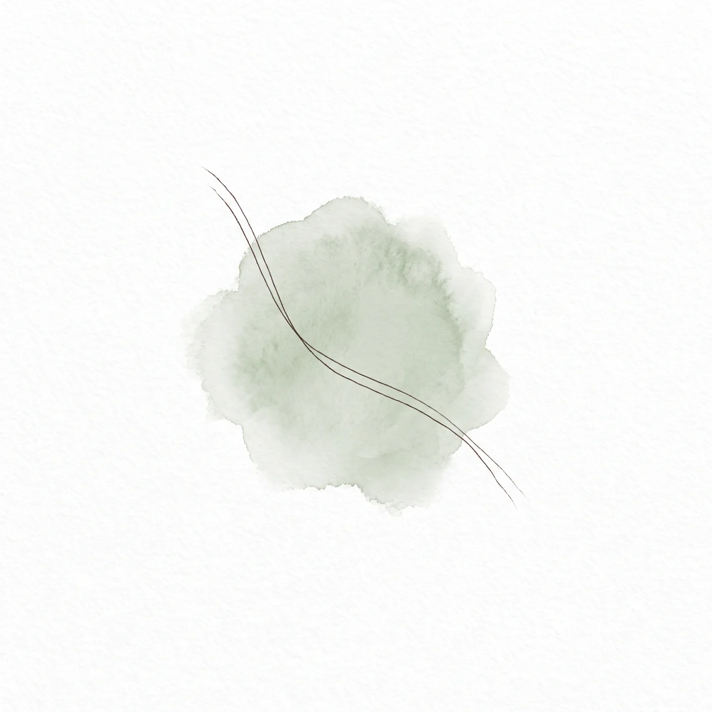

כשאת לא צריכה להסביר הכל
על מה שקורה כשמישהי פשוט נמצאת שם איתך.
יש רגע בטיפול שקשה לתאר אותו במילים. הרגע שבו מישהי מפסיקה להסביר.
לא כי נגמרו לה המילים, אלא כי היא מרגישה שכבר לא צריך. שמה שהיא מביאה מתקבל בלי שתצטרך להצדיק אותו, לארוז אותו יפה או לוודא שהוא הגיוני.
למה זה כל כך נדיר
רובנו רגילות להסביר את עצמנו. בעבודה, בבית, מול המשפחה. אנחנו מקדימות תרופה, מרככות, מנמקות. זה מנגנון חכם שנועד להגן.
אבל הוא גם עייף. וכשהוא פועל כל הזמן, אין רגע שבו פשוט אפשר להיות.
מה שקורה בחדר
המרחב הטיפולי הוא אחד המקומות הבודדים שבהם אין מה להוכיח. אפשר לבוא עם בלבול, עם סתירות, עם משהו שאת עצמך לא מבינה עדיין.
לא צריך להגיע מסודרת.
אפשר להגיע כמו שאת.
הקשב עצמו מרפא
לא כל שינוי מגיע מתובנה. חלק ממנו מגיע מהחוויה של להיות מוקשבת. של לגלות שאפשר להישען ושהעולם לא קורס.
עבור מי שלמדה שאין על מי לסמוך, זו חוויה מתקנת. ולפעמים היא הדבר המשמעותי ביותר בתהליך.
אם משהו כאן נגע במשהו אצלך,
אפשר פשוט לכתוב לי. גם בלי לדעת בדיוק מה לבקש.